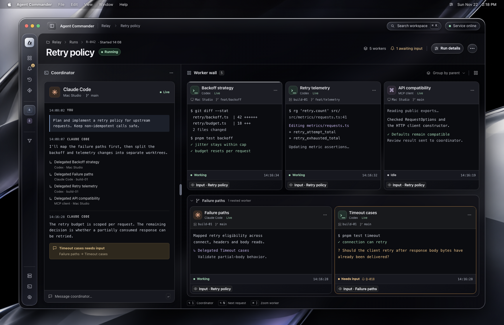

Material and review notes
The window uses black, translucent navigation with soft reflections and a narrow edge highlight. Terminal output sits on near-black wells with steady contrast. Blue marks focus and primary controls, amber marks a pending decision, and every status has a text label. The accessibility comparisons show the wall, a focused worker, and preferences using opaque surfaces and brighter secondary text.
The design follows Apple’s use of glass as a functional layer and its guidance on adapting material for readability. These images illustrate an intended appearance. For implementation, begin with standard AppKit toolbars and sidebars. Evaluate a native glass surface for the stacked request overlay. Native refraction, VoiceOver, keyboard routing and system accessibility settings require verification in the macOS build. Apple HIG materials · Apple AppKit design guidance · Nielsen Norman Group on glassmorphism
Claude Fable 5.2 reviewed the plan and the rendered views in tmux. Its feedback led to separate request-reply and terminal-control actions, a visible input owner, an incoming PiP that preserves keyboard focus, and an integration screen that shows why a branch update is blocked.